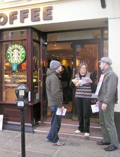

Submitted on Wed, 03/14/2007 - 5:17pm
It’s our Spring Offensive!
 In other words, Baristas United are currently doing an organising drive at coffee shops across the country, yours included.
In other words, Baristas United are currently doing an organising drive at coffee shops across the country, yours included.
What does this mean? It means you’ll have the opportunity to talk to others about your work situation and anything else that’s not quite right at work. It means the opportunity to organise with other baristas to make your life at work better. It means help, support and
solidarity, as and when you need it.
Read the entire bulletin - PDF File.
Submitted on Thu, 03/08/2007 - 2:51pm
Fellow workers,
Glasgow University IWW Job Branch and the Save Crichton Campus campaign in Glasgow are calling another phone lobby on the success of last week’s event, which saw the University implement a telephone protocol for complaints about Crichton and lay on extra staff to deal with the volume of calls.
See: http://iwwscotland.wordpress.com/crichton-struggle/
The campaign is starting to score victories against the decision. The Scottish Executive, previously immovable in claiming Crichton’s closure had nothing to do with them (an article in a Dumfries paper alleges they knew about the decision 8 months ago and gave the University the OK) is now pressurising Sir Muir Russell, principal of the university to meet with them to discuss the issue. The campaign is building momentum on campus with flyposting and creative publicity stunts and resistance is planned, however time is very short as the University has accelerated its attempts to shut the facility down in light of the media exposure. Pressure however is starting to tell.
Submitted on Thu, 03/08/2007 - 2:14pm
SOLIDARITY WITH VICTIMISED STARBUCKS WORKERS - FIVE STARBUCKS WORKERS SACKED FOR FORMING A UNION
For almost 3 years workers in Starbucks have been organising in their franchises in the USA. Starbucks have responded by waging a war of intimidation against the unionising workers. Already 5 employees have lost their jobs – Joseph Agins, Charles Fostrom, Evan Winterscheidt, Daniel Gross (Founder of the Starbucks Union) and Isis Saenz. This is a warning shot towards anyone attempting to improve work conditions. However, Starbucks workers have fought back: winning 2 workers their jobs back and more than $2000 in lost earnings. In New York City, workers have gained a 25% wage increase in just over 2 years, with similar raises in other areas they have organised.
Submitted on Tue, 01/30/2007 - 5:19am
GET ORGANISED!
You’ll make a better life with the union than you ever could without one.
Baristas United is part of the Shop Workers Industrial Union of the Industrial Workers of the World (IWW). The IWW union is controlled directly by its members and fights for better conditions for working people.
It is a fact that today, most coffee shop workers are unorganised. Wages and conditions may vary from company to company and from shop to shop, but whatever the set up, baristas are all subject to the whims of company strategies that seek to reap maximum profits from the labour of coffee shop workers, while generally paying poor wages to the baristas who make those profits possible.
Read More: (PDF File - warning, paper size conforms to European A4 dimensions, not US "letter" or "legal" sizes.)
Submitted on Sun, 01/21/2007 - 8:20pm
As part of its ongoing solidarity campaign with sacked Starbucks workers in the US the Solidarity Federation, ex-loafers and London IWW held a picket of Greenwich and Blackheath Starbucks on Sat 20th Jan 2007.
Starbucks in South East London and the City will be picketted every fortnight thereafter. As a call is made for an end to the anti-union campaign waged by Starbucks and for the reinstatement of all unlawfully fired workers. In addition they are calling on Starbucks to give Ethiopia control over it's coffee.
They will be encouraging Starbuck workers to organise to make their jobs better and finally have a real independant voice at work. By organising a union, baristas in the US have seen wages increased, schedules stabilised and respect from the bosses.
Starbucks have consistently responded to workers organising with threats, intimidation, harassment and illegal firings and since Dec 2005 five workers in NYC have been sacked for engaging in protected union activity.